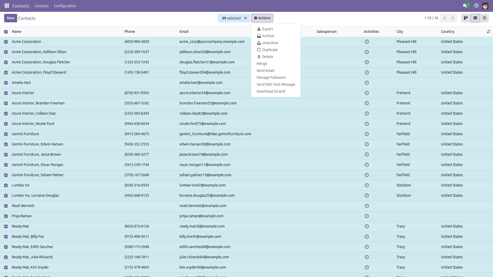
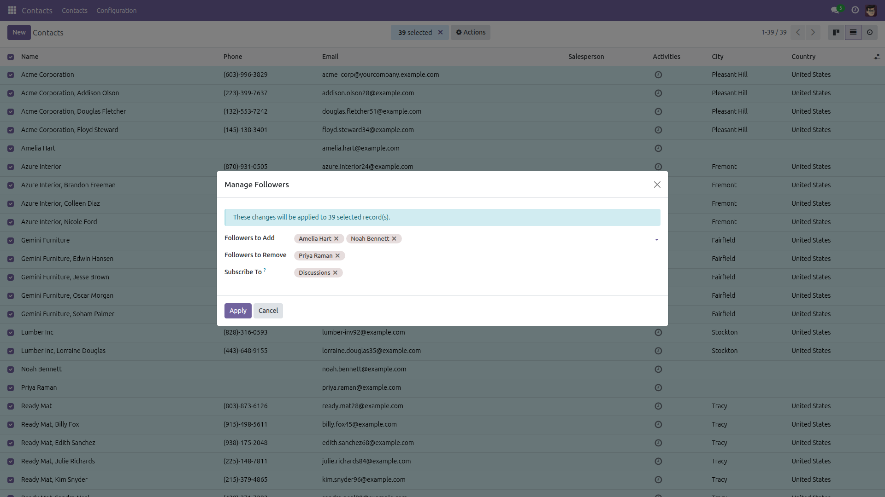
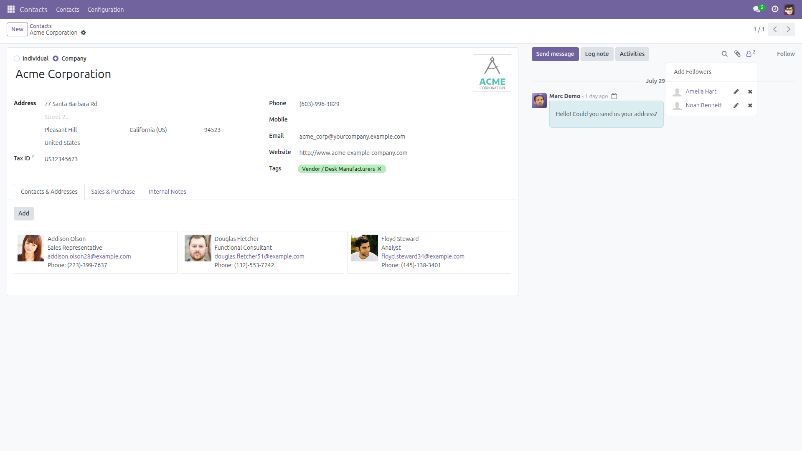

Manage Followers in Bulk
Add and remove followers on every selected record.
Odoo adds or removes a follower one record at a time. Putting the new account manager on ninety customers, or taking a departed colleague off every open project, means opening ninety chatters. This module adds a Manage Followers action: select the records, pick who to add and who to remove, and the change is applied to the whole selection at once.
Free and open source (LGPL-3), Odoo 14.0 through 19.0.
- Add and remove in one pass — two lists in one dialog, applied to every selected record.
- Choose the subtypes — subscribe the new followers to specific message subtypes, or leave it empty for the model defaults.
- Never duplicates — records that are already followed are left alone instead of gaining a second entry.
- Respects access rights — the wizard runs entirely as the current user; records they may not write are refused, never silently changed.
- Clear summary — a notification reports exactly how many follower entries were added and removed.
- Safe on stale selections — deleted records, empty selections and contradictory add/remove lists all give a clean message.
Screenshots

Tick the records in any list view and choose Actions → Manage Followers.

Pick who should start following, who should stop, and optionally the subscription subtypes.

Every selected record now carries the new followers, visible in its chatter.
Installation
- Copy the
followers_bulk_manage folder into your addons path.
- Open Apps, click Update Apps List, search for Manage Followers in Bulk.
- Click Install. Only the standard
mail module is required.
Configuration
- Nothing to configure — the action is available on Contacts immediately after installation.
- To offer it on another model, open Settings → Technical → Actions → Window Actions, find Manage Followers and add that model to its bindings.
- Access is granted to every internal user (Employee); each user can still only change records they are allowed to write.
Usage
- Open a list view and tick the records you want to update.
- Choose Actions → Manage Followers in the toolbar.
- Fill Followers to Add, Followers to Remove, or both. A partner cannot appear in both lists.
- Optionally select the message subtypes the new followers should be subscribed to; leave it empty to use the model defaults.
- Click Apply. A notification reports how many follower entries were added and removed.
Version notes
Identical behavior on every supported series (14.0 – 19.0). The subscription calls are made with keyword arguments so the 14.0 message_subscribe(partner_ids, channel_ids, subtype_ids) signature can never re-bind subtypes to channels.
License: LGPL-3 · Source on GitHub · Issues and contributions welcome.